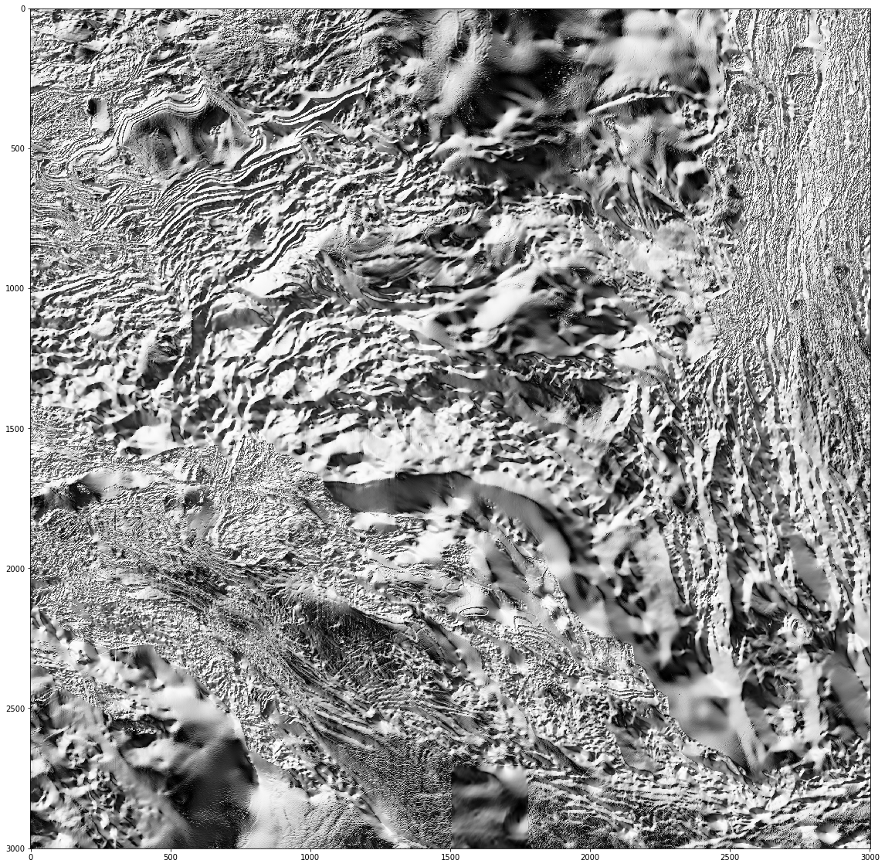

Access Magnetic Intensity grid data using NCSS¶
In this notebook,
- obtain service end points
- display subset datasets
This example was developed by Alex Ip (Alex.Ip@ga.gov.au). See more exmples here.
[ ]:
%matplotlib inline
[2]:
import requests
import netCDF4
import numpy as np
import matplotlib.pyplot as plt
from skimage import exposure
from pprint import pprint
try:
import lxml.etree as ET
except:
import xml.etree.ElementTree as ET
[3]:
#Set NCSS endpoint, bounding box and netCDF file output path
ncss_endpoint = 'http://dap-wms.nci.org.au/thredds/ncss/rr2/geophysics/magmap_v6_2015_VRTP/magmap_v6_2015_VRTP.nc'
bbox_list = [135, -25, 140, -20]
nc_output_path = 'C:/Temp/ncss_test.nc'
[4]:
# Define function to read netCDf subset and write to netCDF file and return variable_details_list
def get_netcdf_subset(ncss_endpoint, bbox_list, nc_output_path, horizStride=1):
'''
Function to read netCDf subset and write to netCDF file and return variable_details_list
See the following page for details:
https://www.unidata.ucar.edu/software/thredds/current/tds/reference/NetcdfSubsetServiceReference.html
'''
# Get dataset description XML
response = requests.get(ncss_endpoint + '/dataset.xml')
dataset_description = ET.fromstring(response.content)
#print(response.content)
# Read variable details from dataset description XML tree
# N.B: This is a bit of a hack which will fail if there are multiple grid resolutions in the one dataset,
# but it's OK when there's only one
variable_details_list = [grid_element.attrib for grid_element in dataset_description.findall('.//grid')]
#pprint(variable_details)
# Setup request parameters
query_params = {'var': ','.join([variable_details['name']
for variable_details in variable_details_list]),
'west': bbox_list[0],
'east': bbox_list[2],
'south': bbox_list[1],
'north': bbox_list[3],
'horizStride': horizStride
}
response = requests.get(ncss_endpoint, params=query_params, stream=True)
assert response.status_code == 200, 'Request failed with response code {}: {}'.format(response.status_code,
response.content
)
with open(nc_output_path, 'wb') as nc_file:
for chunk in response:
nc_file.write(chunk)
return variable_details_list
[5]:
def hillshade(array, azimuth, angle_altitude):
'''
Hillshade function adapted from:
http://geoexamples.blogspot.com/2014/03/shaded-relief-images-using-gdal-python.html
'''
x, y = np.gradient(array)
slope = np.pi/2. - np.arctan(np.sqrt(x*x + y*y))
aspect = np.arctan2(-x, y)
azimuthrad = azimuth * np.pi / 180.
altituderad = angle_altitude * np.pi / 180.
shaded = np.sin(altituderad) * np.sin(slope)\
+ np.cos(altituderad) * np.cos(slope)\
* np.cos(azimuthrad - aspect)
return 255 * (shaded + 1) / 2
[6]:
# Retrieve subset and write to file
variable_details_list = get_netcdf_subset(ncss_endpoint, bbox_list, nc_output_path, horizStride=2)
[7]:
# Open file for reading
netcdf_dataset = netCDF4.Dataset(nc_output_path, 'r')
netcdf_dataset.__dict__
[7]:
OrderedDict([('_NCProperties',
'version=1|netcdflibversion=4.4.1|hdf5libversion=1.8.18'),
('GDAL', 'GDAL 1.11.1, released 2014/09/24'),
('geospatial_lon_min', 134.999606777),
('geospatial_lon_resolution', 0.00083333),
('geospatial_lat_max', -20.000240777000002),
('geospatial_bounds_crs',
'GEOGCS["WGS 84",\n DATUM["WGS_1984",\n SPHEROID["WGS 84",6378137,298.257223563,\n AUTHORITY["EPSG","7030"]],\n AUTHORITY["EPSG","6326"]],\n PRIMEM["Greenwich",0,\n AUTHORITY["EPSG","8901"]],\n UNIT["degree",0.0174532925199433,\n AUTHORITY["EPSG","9122"]],\n AUTHORITY["EPSG","4326"]]'),
('geospatial_lat_min', -25.000238777000003),
('geospatial_lat_resolution', 0.00083333),
('geospatial_lat_units', 'degrees'),
('geospatial_lon_units', 'degrees'),
('geospatial_bounds',
'POLYGON((147.9754 -43.9236, 145.6104 -43.9061, 145.2663 -43.9001, 115.9829 -35.0230, 115.4506 -34.8148, 114.9457 -34.4447, 114.8626 -34.3367, 114.8200 -34.2771, 114.0518 -33.1620, 113.0639 -27.9044, 112.7170 -26.0044, 112.5113 -23.3111, 112.5071 -23.1161, 112.5078 -23.0802, 112.9208 -21.3720, 115.9177 -18.2747, 122.4740 -12.7266, 124.5164 -11.1091, 126.0164 -10.0507, 126.1170 -10.0007, 126.8163 -9.7089, 127.3822 -9.4847, 127.6838 -9.3751, 131.9863 -9.0628, 132.0054 -9.0627, 142.3180 -9.9501, 142.3389 -9.9573, 152.9134 -20.9828, 154.6612 -29.0902, 154.6611 -29.6302, 149.0333 -42.4411, 148.9670 -42.5565, 148.8275 -42.7895, 148.5900 -43.1812, 148.3542 -43.5662, 148.1337 -43.9215, 147.9754 -43.9236))'),
('geospatial_lon_max', 139.999604777),
('uuid', '221dcfd8-04ef-5083-e053-10a3070a64e3'),
('ecat_id', '89596'),
('title',
'Total Magnetic Intensity (TMI) Grid of Australia with Variable Reduction to Pole (VRTP) - sixth edition'),
('source',
'The variable reduction to Pole (VRTP) grid was processed from the 2015 Total Magnetic Intensity (TMI) grid of the Australia region. The later grid is made of a compilation of 31,500,000 line-kilometres of survey data acquired by the Commonwealth, State and Territory Governments, the mining and exploration industry, universities and research organisations.'),
('summary',
'Total magnetic intensity (TMI) data measures variations in the intensity of the Earth magnetic field caused by the contrasting content of rock-forming minerals in the Earth crust. Magnetic anomalies can be either positive (field stronger than normal) or negative (field weaker) depending on the susceptibility of the rock. \nA variable reduction to Pole is aimed at locating magnetic anomalies exactly above their source bodies and without any distortion. \nThe 2015 Total magnetic Intensity (TMI) grid of Australia with variable reduction to pole (VRTP) has a grid cell size of ~3 seconds of arc (approximately 80 m). This grid only includes airborne-derived TMI data for onshore and near-offshore continental areas. The VRTP processing followed a differential reduction to pole calculation up to 5th order polynomial. Magnetic inclination and declination were derived from the IGRF-11 geomagnetic reference model using a data representative date of January 2005 and elevation 300 m.'),
('product_version', 'Version 2.0, April 2015'),
('date_created', '2017-09-07T04:22:56, 2015-01-27T00:00:00'),
('date_modified', '2017-09-07T04:22:56, 2015-01-27T00:00:00'),
('history',
"The variable reduction to Pole (VRTP) grid of Australia is processed from the 2015 TMI grid of the Australian region. The TMI grid is the sixth edition magnetic grid with a cell size of ~3 seconds of arc (approximately 80 m). This grid only includes airborne-derived TMI data for onshore and near-offshore continental areas. Since the fifth edition was released in 2010 data from 41 new surveys have been added to the database, acquired mainly by the State and Territory Geological Surveys. It is estimated that 31,500,000 line-kilometres of survey data were acquired to produce the grid data, 4,500,000 line-kilometres more than for the previous edition. \nMatching of the grids in the database was achieved using a program called Gridmerge, which was originally developed within Geoscience Australia and has now been commercialised. This program was used to merge 41 new surveys to the 5th Edition Total Magnetic Intensity Anomaly Grid of Australia (Milligan et al., 2010). \nThe 5th Edition merged 795 individual grids to create the compilation. To constrain long wavelengths, an independent data set, the Australia-wide Airborne Geophysical Survey (AWAGS) airborne magnetic data, was used to control the base levels of those survey grids which overlapped the AWAGS data (Milligan et al., 2009). As the 5th Edition was used as a base grid for the Gridmerge operation, the new 6th Edition is essentially levelled to AWAGS.\nThe VRTP processing followed Cooper and Cowan's (2005) differential reduction to pole up to 5th order polynomial. Magnetic inclination and declination were derived from the IGRF-11 geomagnetic reference model (Finlay et al., 2010) using a data representative date of January 2005 and elevation 300 m.\nThe original grid was converted from ERMapper (.ers) format to netCDF4_classic format using GDAL1.11.1. The main purpose of this conversion is to enable access to the data by relevant open source tools and software. The netCDF grid was created on 2016-03-29. \nReferences\nCooper, G.R.J., Cowan, D.R., 2005. Differential reduction to the pole, Computers & Geosciences, Vol. 31, Issue 8, pp. 989-999.\nFinlay, C.C., Maus, S., Beggan, C.D., Bondar, T. N., Chambodut, A., Chernova, T.A., Chulliat, A., Golovkov, V.P., Hamilton, B., Hamoudi, M., Holme, R., Hulot, G., Kuang, W., Langlais, B., Lesur, V., Lowes, F.J. LA14hr, H., Macmillan, S., Mandea, M., McLean, S., Manoj, C., Menvielle, M., Michaelis, I., Olsen, N., Rauberg, J., Rother,M., Sabaka, T.J., Tangborn, A., TA ffner-Clausen, L., ThAbault, E., Thomson, A.W.P., Wardinski, I., Wei1, Z. and Zvereva, T.I., 2010. International Geomagnetic Reference Field: the eleventh generation, Geophysical Journal International, vol. 183, pp. 1216-1230.\nMilligan, P.R., Franklin, R., Minty, B.R.S., Richardson, L.M. and Percival, P.J., 2010. Magnetic Anomaly Map of Australia (Fifth Edition), 1:5 000 000 scale, Geoscience Australia, Canberra.\n20170906 NetCDF file restructured to be indexed Southward-positive for improved performance and interoperability"),
('institution',
'Commonwealth of Australia (Geoscience Australia)'),
('keywords',
'RTP, magnetics, magnetism and palaeomagnetism, airborne digital data, reduction to pole, national geophysical compilation, Earth sciences, geophysics, NCI, Australia, grid, ANVGL'),
('license',
'Creative Commons Attribution 4.0 International Licence'),
('doi', 'http://dx.doi.org/10.4225/25/5625EB0429F0D'),
('metadata_link',
'https://pid.nci.org.au/dataset/221dcfd8-04ef-5083-e053-10a3070a64e3'),
('Conventions', 'CF-1.6, ACDD-1.3'),
('History',
'Translated to CF-1.0 Conventions by Netcdf-Java CDM (CFGridWriter2)\nOriginal Dataset = /g/data/rr2/national_geophysical_compilations/magmap_v6_2015_VRTP/magmap_v6_2015_VRTP.nc; Translation Date = 2019-05-03T02:19:41.950Z')])
[8]:
#Plot first (and only) grid variable
variable_name = variable_details_list[0]['name']
print('{} has shape {}'.format(variable_name, netcdf_dataset.variables[variable_name].shape))
plt.figure(figsize=(30,20))
plt.imshow(netcdf_dataset.variables[variable_name], cmap='Spectral')
mag_tmi_rtp_anomaly has shape (3001, 3001)
[8]:
<matplotlib.image.AxesImage at 0x1ca5acf2128>

[9]:
# Plot interpolated grid with histogram equalisation
# Substitute minimum value for NaN values
masked_grid = netcdf_dataset.variables[variable_name][:]
plt.figure(figsize=(30,20))
plt.imshow(exposure.equalize_hist(image=masked_grid.data), cmap='Spectral')
[9]:
<matplotlib.image.AxesImage at 0x1ca5dbe4160>

[10]:
hs_array = hillshade(masked_grid, 315, 45)
plt.figure(figsize=(30,20))
plt.imshow(hs_array,cmap='Greys')
[10]:
<matplotlib.image.AxesImage at 0x1ca5e628d68>

[ ]: